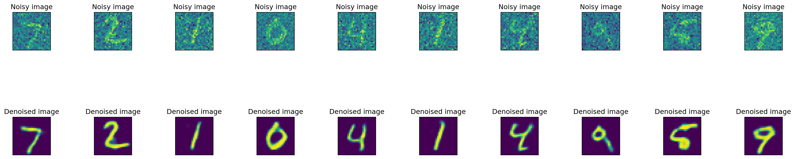

import numpy as np
import matplotlib.pyplot as plt
import tensorflow.keras as tk
from tensorflow.keras import backend as K
from tensorflow.keras.datasets import mnist
from tensorflow.keras.layers import Conv2D, MaxPooling2D, UpSampling2D
from tensorflow.keras.models import Model
from tensorflow.keras.optimizers import Adam
# MNIST dataset loading
(x_train, y_train), (x_test, y_test) = mnist.load_data()
# Number of samples in the training dataset
num_examples = x_train.shape[0]
# Number of samples in the test dataset
num_test = x_test.shape[0]
# Size of the input layer (retina) = number of pixels of the MNIST images (784 pixels)
num_input = x_train.shape[1]*x_train.shape[2]
# Number of classes ( the 10 digits : {0, 1, 2, 3, 4, 5, 6, 7, 8, 9})
num_classes = 10
# Width ( and height) of the images
img_size = x_train.shape[1]
# Size of (square) image
img_shape = (img_size, img_size)
# Reshape of datatsets in array and normalization
x_train = x_train.astype('float32') / 255.
x_test = x_test.astype('float32') / 255.
x_train = np.reshape(x_train, (len(x_train), img_size, img_size, 1))
x_test = np.reshape(x_test, (len(x_test), img_size, img_size, 1))
# Add noise on training dataset
noise = 0.5
x_train_noised = x_train + noise * np.random.normal(loc=0.0, scale=1.0, size=x_train.shape)
x_test_noised = x_test + noise * np.random.normal(loc=0.0, scale=1.0, size=x_test.shape)
# Algorithm parameters
lr = 0.001
num_epochs = 5
batch_size = 256
# Model
model = tk.models.Sequential()
model.add(Conv2D(32, (3,3), activation='relu', padding='same', input_shape=(img_size,img_size,1)))
model.add(MaxPooling2D((2,2), padding='same'))
model.add(Conv2D(64, (3,3), activation='relu', padding='same'))
model.add(MaxPooling2D((2,2), padding='same'))
model.add(Conv2D(64, (3,3), activation='relu', padding='same'))
model.add(UpSampling2D((2,2)))
model.add(Conv2D(32, (3,3), activation='relu', padding='same'))
model.add(UpSampling2D((2,2)))
model.add(Conv2D(1,(3,3), activation='sigmoid', padding='same'))
# Training
adam = Adam(lr)
model.compile(optimizer=adam, loss='binary_crossentropy',metrics=['acc'])
model.fit(x_train_noised,x_train,epochs=num_epochs,batch_size=batch_size,verbose=0,validation_data=(x_test_noised, x_test))
# Denoised test images
denoised_img = model.predict(x_test_noised)
plt.figure(figsize=(40, 4))
for i in range(10):
ax = plt.subplot(3, 20, i + 1)
ax.get_xaxis().set_visible(False)
ax.get_yaxis().set_visible(False)
ax.set_title("Noisy image")
plt.imshow(x_test_noised[i].reshape(img_size, img_size))
ax = plt.subplot(3, 20, 40 +i+ 1)
ax.get_xaxis().set_visible(False)
ax.get_yaxis().set_visible(False)
ax.set_title("Denoised image")
plt.imshow(denoised_img[i].reshape(img_size, img_size))
plt.tight_layout() 1/313 [..............................] - ETA: 40s 4/313 [..............................] - ETA: 7s 7/313 [..............................] - ETA: 7s 10/313 [..............................] - ETA: 7s 12/313 [>.............................] - ETA: 7s 15/313 [>.............................] - ETA: 7s 18/313 [>.............................] - ETA: 7s 20/313 [>.............................] - ETA: 7s 22/313 [=>............................] - ETA: 7s 25/313 [=>............................] - ETA: 6s 27/313 [=>............................] - ETA: 7s 29/313 [=>............................] - ETA: 7s 31/313 [=>............................] - ETA: 7s 34/313 [==>...........................] - ETA: 7s 36/313 [==>...........................] - ETA: 7s 38/313 [==>...........................] - ETA: 7s 41/313 [==>...........................] - ETA: 6s 44/313 [===>..........................] - ETA: 6s 47/313 [===>..........................] - ETA: 6s 50/313 [===>..........................] - ETA: 6s 52/313 [===>..........................] - ETA: 6s 54/313 [====>.........................] - ETA: 6s 57/313 [====>.........................] - ETA: 6s 59/313 [====>.........................] - ETA: 6s 61/313 [====>.........................] - ETA: 6s 63/313 [=====>........................] - ETA: 6s 65/313 [=====>........................] - ETA: 6s 68/313 [=====>........................] - ETA: 6s 70/313 [=====>........................] - ETA: 6s 72/313 [=====>........................] - ETA: 6s 74/313 [======>.......................] - ETA: 6s 76/313 [======>.......................] - ETA: 6s 79/313 [======>.......................] - ETA: 6s 81/313 [======>.......................] - ETA: 6s 84/313 [=======>......................] - ETA: 6s 86/313 [=======>......................] - ETA: 5s 89/313 [=======>......................] - ETA: 5s 92/313 [=======>......................] - ETA: 5s 94/313 [========>.....................] - ETA: 5s 96/313 [========>.....................] - ETA: 5s 98/313 [========>.....................] - ETA: 5s100/313 [========>.....................] - ETA: 5s102/313 [========>.....................] - ETA: 5s105/313 [=========>....................] - ETA: 5s107/313 [=========>....................] - ETA: 5s110/313 [=========>....................] - ETA: 5s112/313 [=========>....................] - ETA: 5s115/313 [==========>...................] - ETA: 5s118/313 [==========>...................] - ETA: 5s120/313 [==========>...................] - ETA: 5s123/313 [==========>...................] - ETA: 5s126/313 [===========>..................] - ETA: 4s128/313 [===========>..................] - ETA: 4s130/313 [===========>..................] - ETA: 4s132/313 [===========>..................] - ETA: 4s134/313 [===========>..................] - ETA: 4s137/313 [============>.................] - ETA: 4s139/313 [============>.................] - ETA: 4s141/313 [============>.................] - ETA: 4s143/313 [============>.................] - ETA: 4s145/313 [============>.................] - ETA: 4s147/313 [=============>................] - ETA: 4s149/313 [=============>................] - ETA: 4s151/313 [=============>................] - ETA: 4s154/313 [=============>................] - ETA: 4s156/313 [=============>................] - ETA: 4s159/313 [==============>...............] - ETA: 4s161/313 [==============>...............] - ETA: 4s163/313 [==============>...............] - ETA: 4s165/313 [==============>...............] - ETA: 4s167/313 [===============>..............] - ETA: 3s170/313 [===============>..............] - ETA: 3s173/313 [===============>..............] - ETA: 3s176/313 [===============>..............] - ETA: 3s179/313 [================>.............] - ETA: 3s181/313 [================>.............] - ETA: 3s184/313 [================>.............] - ETA: 3s186/313 [================>.............] - ETA: 3s188/313 [=================>............] - ETA: 3s190/313 [=================>............] - ETA: 3s193/313 [=================>............] - ETA: 3s195/313 [=================>............] - ETA: 3s197/313 [=================>............] - ETA: 3s199/313 [==================>...........] - ETA: 3s202/313 [==================>...........] - ETA: 2s205/313 [==================>...........] - ETA: 2s207/313 [==================>...........] - ETA: 2s210/313 [===================>..........] - ETA: 2s212/313 [===================>..........] - ETA: 2s215/313 [===================>..........] - ETA: 2s217/313 [===================>..........] - ETA: 2s219/313 [===================>..........] - ETA: 2s221/313 [====================>.........] - ETA: 2s223/313 [====================>.........] - ETA: 2s226/313 [====================>.........] - ETA: 2s228/313 [====================>.........] - ETA: 2s231/313 [=====================>........] - ETA: 2s233/313 [=====================>........] - ETA: 2s235/313 [=====================>........] - ETA: 2s237/313 [=====================>........] - ETA: 2s240/313 [======================>.......] - ETA: 1s243/313 [======================>.......] - ETA: 1s246/313 [======================>.......] - ETA: 1s249/313 [======================>.......] - ETA: 1s252/313 [=======================>......] - ETA: 1s254/313 [=======================>......] - ETA: 1s256/313 [=======================>......] - ETA: 1s258/313 [=======================>......] - ETA: 1s261/313 [========================>.....] - ETA: 1s264/313 [========================>.....] - ETA: 1s267/313 [========================>.....] - ETA: 1s270/313 [========================>.....] - ETA: 1s272/313 [=========================>....] - ETA: 1s274/313 [=========================>....] - ETA: 1s276/313 [=========================>....] - ETA: 0s279/313 [=========================>....] - ETA: 0s282/313 [==========================>...] - ETA: 0s284/313 [==========================>...] - ETA: 0s287/313 [==========================>...] - ETA: 0s289/313 [==========================>...] - ETA: 0s291/313 [==========================>...] - ETA: 0s293/313 [===========================>..] - ETA: 0s296/313 [===========================>..] - ETA: 0s299/313 [===========================>..] - ETA: 0s301/313 [===========================>..] - ETA: 0s303/313 [============================>.] - ETA: 0s305/313 [============================>.] - ETA: 0s307/313 [============================>.] - ETA: 0s310/313 [============================>.] - ETA: 0s312/313 [============================>.] - ETA: 0s313/313 [==============================] - 8s 26ms/step